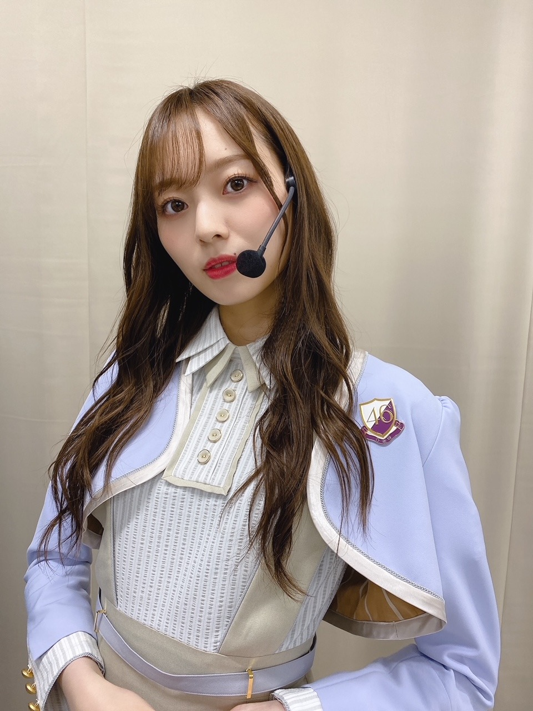
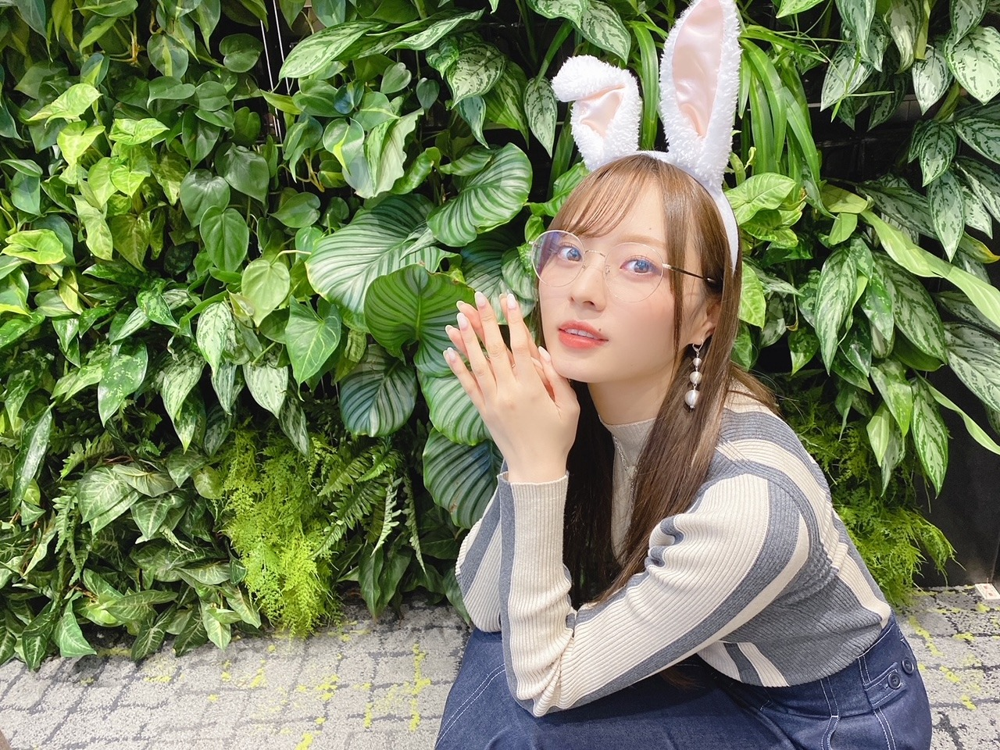
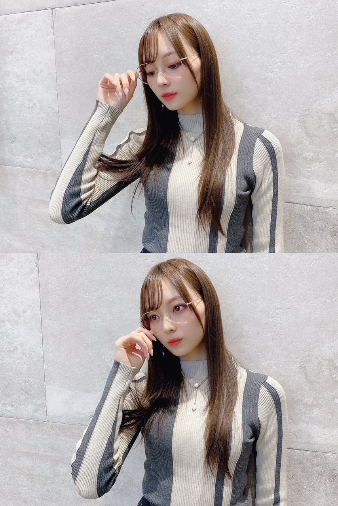
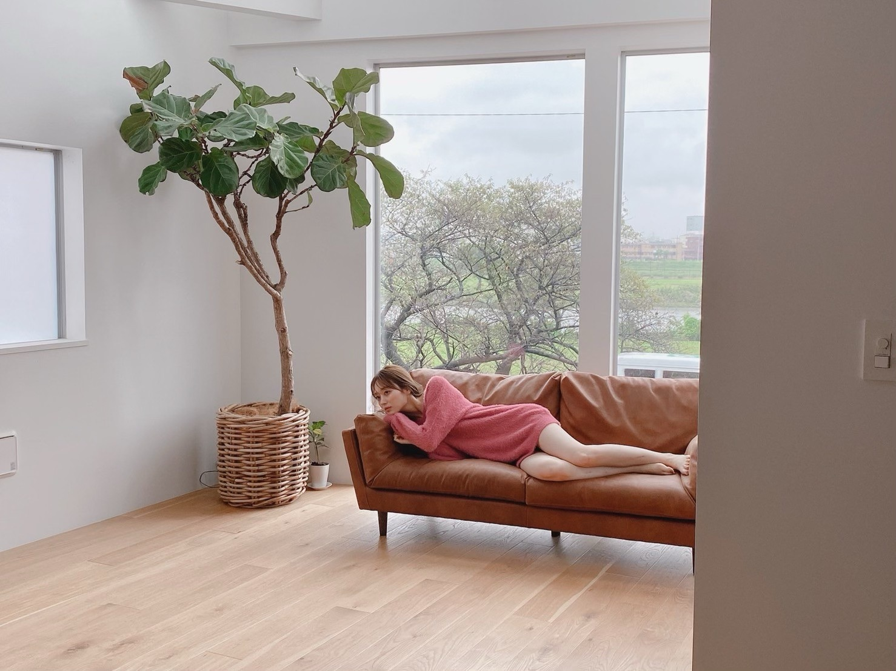
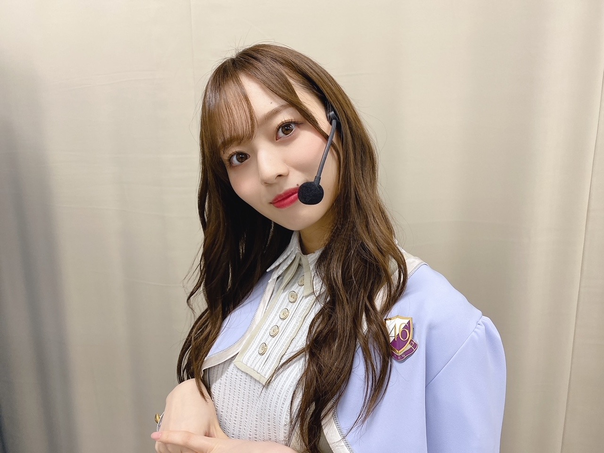

消えかけの線香花火

とても鮮やかで爽やか。
制服に合わせてこの日は
ピンクメイクにしました〜！
目元はブラウン、
チークとリップはピンク！
ずっとオレンジだったから久しぶりに、、
乃木坂バッチがかわいい☀︎
さて！
本日１１／６〜
札幌、名古屋、博多の３書店にて
１st写真集「夢の近く」のパネル展第2弾が
開催されております♡
未公開カットも盛りだくさんで
パネル一枚一枚に心を込めて
メッセージを書きました。
パネル展のテーマは
「#美波からありがとう」です！
たくさんの方に届くといいなあ。
ぜひ、ハッシュタグ付けて
SNSで呟いてください！見に行きます☀︎
開催日時
▽コーチャンフォー 新川通り店 様
１１／６〜１１／３０
▽星野書店近鉄パッセ店 様
１１／６〜１１／３０
▽HMV & BOOKS HAKATA 様
１１／６〜１１／２２
そして、パネル展に飾られているものと
同サイズのB4パネルに
私が直筆のメッセージとサインを描いたものを
１st写真集「夢の近く」を
対象期間中にゲットしてくださった方に
抽選でプレゼントします！
ぜひ、こちらも応募してみてください♡
パネル展開催書店様にて
数量限定で新絵柄のポストカードもついてきますので
こちらもチェックよろしくお願いします☀︎
先日の３１日のハロウィンは
オンラインミート&グリートでした☀︎
耳だけ 生やしました、、

なんだか恥ずかしくて
付けたのは３部だけ。（笑）
見れた方レアでした！！（笑）

この日はメガネでした〜！
メガネ好き〜☀︎
オンラインだけど
顔が見れてわたしはとっても嬉しいし
楽しんでるよ〜〜！
明日もあります︎︎︎︎︎︎︎︎✌︎
よろしくお願いします〜！
ノギザカスキッツに
３期生も参加させて頂くことになりました！
ACT2が１０日からスタートします！
本格的なコントは初挑戦かな。
色々まだ模索中ですが
自由に、振り切ってやらせてもらってます！
３期生 ５年目にして
みんなの新たな一面が見られると思います☀︎
コントというジャンルから
また色々吸収して勉強していきたいと思っています。
３期生１２人も全力で頑張りますので
皆様ぜひ、よろしくお願いします。
初回は収録済みですが
４期生のみんながとにかく可愛いし
コントの経験は私たちよりあるので
とても逞しくて一緒にできて嬉しいです！
これを機会に一人一人ともっと仲良くなれたらいいなあ♡
さらば青春の光のお二人とも
少しずつ距離を縮められたらなと思っております！
予告はもう公開されてますので
ぜひ！お楽しみに！

表紙を務めさせていただいてます
月刊エンタメ 発売中です！
とっても楽しい撮影でした〜
見てくれた姉から連絡がきて、
なんか大人になったねと 言われました〜
どうでしょうか？
ぜひチェックしてください☀︎
両面ポスターもついてきます！
佐藤璃果ちゃんも載ってます♡
とても可愛いです〜！
私が一番好きなお弁当があって
かれいの西京漬けのお弁当なのですが
なかなか 出会えないお弁当でですね、
年末のCDTVかな？それ以来 出会えてなくて
ずーっと出会える日を心待ちにしていたら
やっとついこの間出会えたのです！
嬉しかった〜
久しぶりに食べたけど
やっぱりナンバーワンでした、、
次はいつ食べられるかな〜
あとはずっと
今年のアウター探しの毎日！
自分の理想のアイテムに出会うのって
本当に難しいですよね。
皆様もう手に入れました？
今年は買わなくてもいいかなと思いつつ
やっぱり欲しくなる、、
街歩いてれば誘惑がたくさん！
そしてもう、クリスマスシーズンですね
クリスマスソングが流れていたり
ツリーが売ってたり
電飾が飾られていたり。
クリスマスの雰囲気が大好きなので
できるだけ長く味わいたい〜
寒さもいい感じの寒さになってきて
冬好きなわたしにはたまりません、、
夜の外の気温と匂いが好きすぎて
歩いていてもるんるん。
帰ってきては窓を開けて風を浴びる日々。
皆様、風邪引かないように
お気をつけくださいね︎︎︎︎✌︎
さて！
今日も夜ご飯を楽しみに
お仕事頑張りました〜
美味しい食べものが溢れかえっていて
幸せの悲鳴です、、
この間撮影で一緒だった
５歳の女の子の癒しパワーがとてつもなくて
また会いたい、、となってる。
小さい子の力ってすごい。
またお知らせしますね☀︎

では。
また更新します
おやすみなさい！
わたしはなにかと
物事をルーティーン化しがちだけど
少し違ったことを取り入れたら
また新しい 楽しさ に気づきます
気づけたときには 嬉しさ がすごい。
まだまだ知らないことばかりが溢れた世界ですが
自分が存在できるうちに
どれだけ知識を得られるかは
自分次第ですよね〜
分かってはいてもなかなか。
でもその事実にさえワクワクする〜！
Original：https://www.nogizaka46.com/s/n46/diary/detail/58673?ima=4936&cd=MEMBER